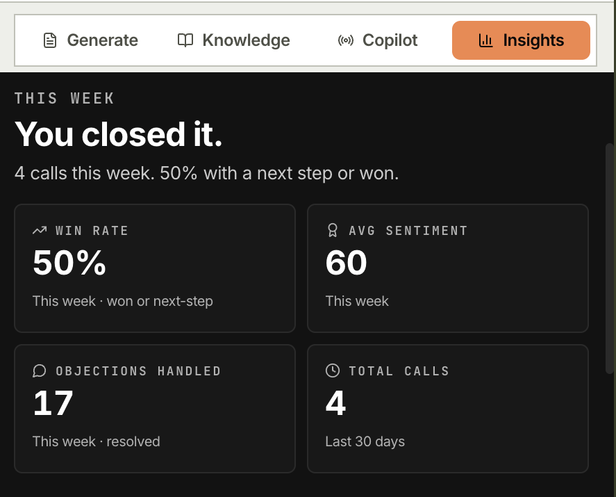

Open-source AI sales copilot · MIT licensed
The copilot that
closes deals with you.
Live coaching during the call, pitches grounded in your own knowledge base, and objections answered on the spot. It sits in your Chrome sidebar and runs on your own keys. There is no Wingman server.

